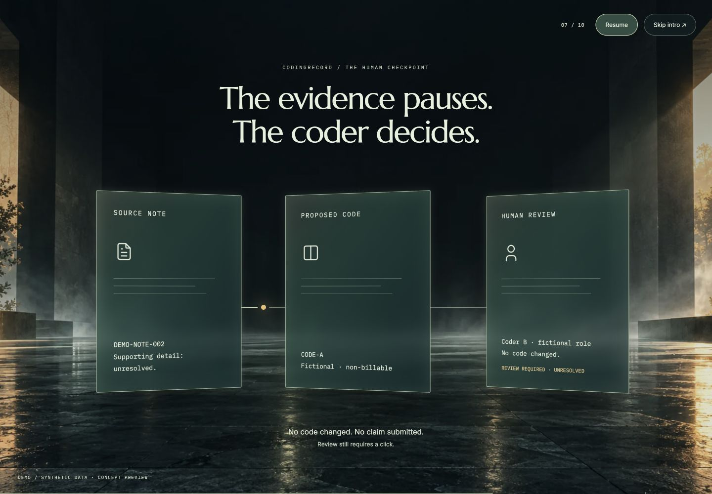
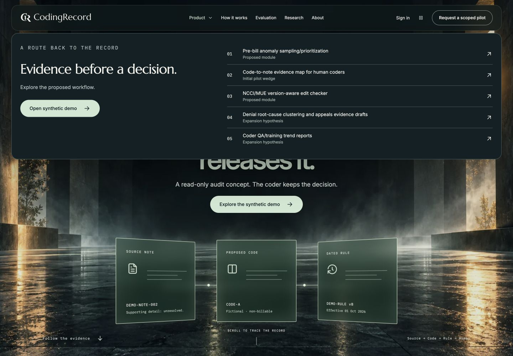
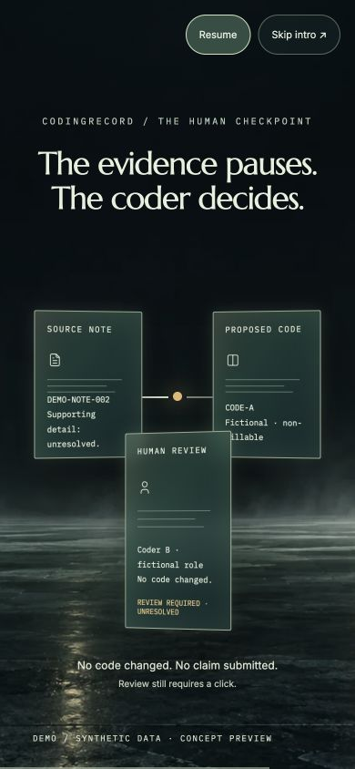
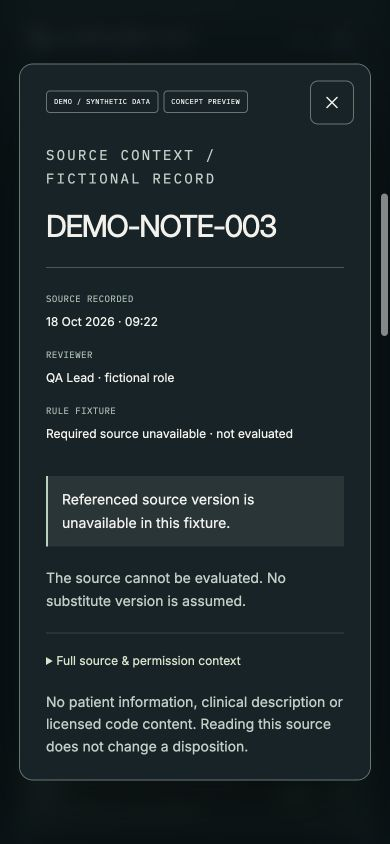
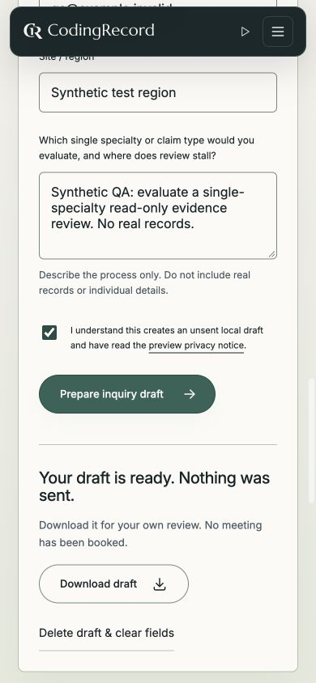
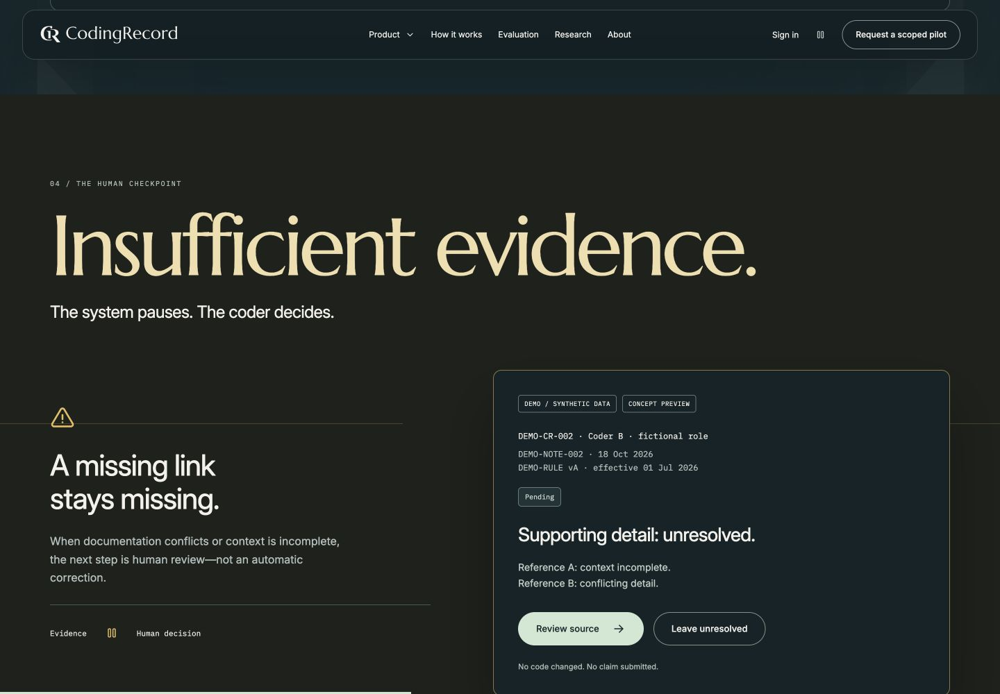

CODINGRECORD / 18 OCTOBER 2026
Final local-preview QA
Fixes made
- Move focus to Skip intro when the intro opens.
- Dismiss the source dialog when the route changes.
- Clear stale demo notifications on route changes.
1. Intro and handoff
Pass after keyboard-focus fix. Playback hides the navbar; completion reveals the hero and navigation. Pause/resume, Tab loop, Escape, and reduced-motion entry checked.

2. Desktop navigation
Pass. Dropdown aligns to navbar margins. Route changes close the menu.

3. Mobile navigation and film
Pass at 390 × 844. Navbar remains absent from the film, controls remain reachable, and mobile navigation closes after selection.

4. Synthetic evidence workflow
Pass. An unresolved disposition persists across rule-version changes; reset restores the fixture; blocked source disables Mark reviewed. Source modal inspected on mobile. Fixed the modal and stale notifications remaining across route changes.

5. Forms
Pass within preview scope. Empty inquiry focuses required role. Synthetic input produces an unsent local draft; test draft cleared. Sign-in reports that authentication is not connected.

6. Scroll and responsive layouts
Pass in sampled story sections. Desktop and mobile route sweeps covered 18 secondary routes at 1440 × 1000 and 390 × 844: no document-width overflow or broken image elements. Scroll down/up preserves the visible checkpoint.

Coverage and limits
Fresh screenshots and live interactions were captured in the Codex in-app browser. Desktop/mobile route checks are recorded in route-checks.json. Secondary-route checks covered initial rendering, heading presence, document width and image loading; this is not an exhaustive review of every scroll position on every page.
No production authentication, email delivery, PHI workflows or external integrations were tested: these remain intentionally disconnected. This does not certify full accessibility, cross-browser compatibility or performance on real mobile hardware. No public deployment or domain verification was performed.